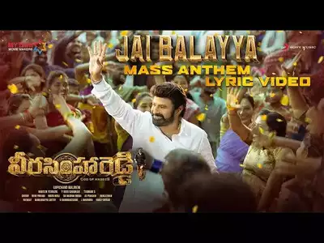

Balaya
languages
Telugu
Hindi
English
Article
Nandamuri Balakrishna (born 10 June 1960), simply as Balakrishna and also known as Balayya or NBK is an Indian actor, film producer and politician known for his works in Telugu cinema.[2][3] Balakrishna is an elected member of the Andhra Pradesh Legislative Assembly from Hindupuram constituency since 2014.[4] The sixth son of Legendary actor and former Chief Minister of Andhra Pradesh N. T. Rama Rao, Balakrishna made his debut as a child artist at the age of 14 with the film Tatamma Kala (1974).[5][6] Balakrishna is a recipient of three state Nandi Awards and one South Indian International Movie Award.[7] In 2012, Balakrishna was the chief guest at the 43rd IFFI.[8] Currently, he serves as the Chairman of Basavatarakam Indo-American Cancer Hospital and Research Institute in Hyderabad.[9

Carrer
Starting years (1974)
Balakrishna made his acting debut as a child artiste in Tatamma Kala, which was directed by N. T. Rama Rao, his father. He acted in several films, many of which were directed by his father, including Daana Veera Soora Karna (1977), Sri Madvirata Parvam (1979), Akbar Salim Anarkali (1979) and Sri Tirupati Venkateswara Kalyanam (1979). At the age of 16, he acted in a movie titled Annadammula Anubandham (1975), a remake of Dharmendra's Hindi movie Yaadon Ki Baaraat, and played a brother to his real life father, Rama Rao. Balakrishna appeared as son to his real life brother Nandamuri Harikrishna in the movie Dana Veera Sura Karna.
In 1984, he debuted in an adult role with Sahasame Jeevitham. He then starred in the drama film Mangammagari Manavadu the same year, alongside Bhanumathi and Suhasini, directed by Kodi Ramakrishna. In the same year, he acted in Kathanayakudu and in the biographical film Shrimad Virat Veerabrahmendra Swami Charitra. He also appeared in Janani Janmabhoomi in 1984, directed by K. Viswanath. In 1985, he acted with Akkineni Nageswara Rao in the film Bharyabhartala Bandham, alongside Rajani. In 1986, he acted in movies such as Muddula Krishnaiah, Seetharama Kalyanam, Anasuyamma Gari Alludu and Deshoddharakudu, which gradually increased his potential at the box office.[vague]
Family
Nandamuri Balakrishna was born on 10 June 1960 in Madras (present-day Chennai, Tamil Nadu) to Telugu actor and three-time Chief Minister of Andhra Pradesh N. T. Rama Rao and his wife Basavatarakam.[15][16] As the Telugu film industry was based in Madras at that time, he spent his entire childhood in Madras. During his adolescence, he moved to Hyderabad following the shift of the Telugu film industry to that city.[citation needed] He earned a bachelor's degree in commerce from Nizam College, Hyderabad.[17][when?]
In 1982, at the age of 22, Balakrishna married Vasundhara Devi. They had three children.[18]